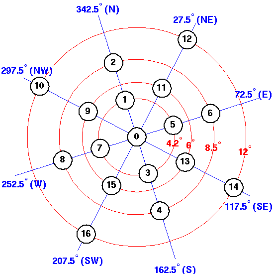

|

|
THE NERC MST RADAR FACILITY AT ABERYSTWYTH | ||||||||
| CONTACTS | DATA | GENERAL | MAIN MENU | PLOTS |
WIND-PROFILER PRINCIPLES |
|||||
AVAILABLE MST RADAR BEAM POINTING DIRECTIONS | ||||||||||
|  |
| The NERC MST radar beam can be directed in 17 possible directions; vertically or at 4.2°, 6.0°, 8.5° or 12.0° off-vertical in a variety of azimuths. |
| CONTACTS | DATA | GENERAL | MAIN MENU | PLOTS |
WIND-PROFILER PRINCIPLES |
|
Page maintained by
David Hooper Last updated 7th August 2002 |